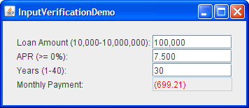
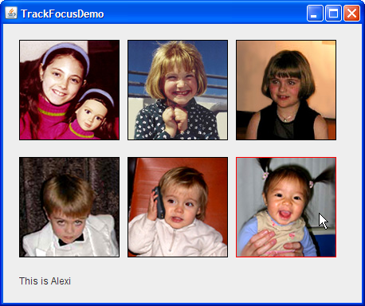

Many components — even those primarily operated with the mouse, such as buttons — can be operated with the keyboard. For a key press to affect a component, the component must have the keyboard focus.From the user's point of view, the component with the keyboard focus is generally prominent — with a dotted or black border, for example — and the window containing the component is also more prominent than other windows onscreen. These visual cues let the user know to which component any typing will go. At most one component in the window system can have the keyboard focus.
Exactly how a window gains the focus depends on the windowing system. There is no foolproof way, across all platforms, to ensure that a window gains the focus. On some systems, such as Microsoft Windows, the frontmost window becomes the focused window; in these cases, the method
Window.toFrontmoves the window to the front thereby giving it the focus. However, on some systems, such as Solaris, some window managers choose the focused window based on cursor position; in these casesWindow.toFrontdoes not result in the same behavior.A component generally gains the focus by the user clicking it, tabbing between components, or otherwise interacting with a component. A component can also be given the focus programmatically, such as when its containing frame or dialog is made visible. This code snippet shows how to give a particular component the focus every time the window is activated:
//Make textField get the focus whenever frame is activated. frame.addWindowListener(new WindowAdapter() { public void windowActivated(WindowEvent e) { textField.requestFocusInWindow(); } });If you want to ensure that a particular component gains the focus the first time window is activated, you can call
requestFocusInWindowon the component after the component has been realized, but before the frame is displayed. Here is some sample code showing how this can be done://...Where initialization occurs... JFrame frame = new JFrame("Test"); JPanel = new JPanel(new BorderLayout()); //...Create a variety of components here... //Create the component that will have the initial focus. JButton button = new JButton("I'm first"); panel.add(button); frame.getContentPane().add(panel); //Add it to the panel frame.pack(); //Realize the components. //This button will have the initial focus. button.requestFocusInWindow(); frame.setVisible(true); //Display the window.
Version note: This section describes the focus architecture implemented in release 1.4. Prior to 1.4,JComponentmethods such assetNextFocusableComponent,getNextFocusableComponent,requestDefaultFocus, andisManagingFocuswere used to manage the keyboard focus. These methods are now deprecated. Another method,requestFocus, is discouraged because it tries to give the focus to the component's window, which is not always possible. As of 1.4, you should instead userequestFocusInWindowwhich does not attempt to make the component's window focused and which returns a boolean value indicating whether the method succeeded.The rest of this section covers the following topics:
Introduction to the Focus Subsystem
The focus subsystem is designed to do the right thing as invisibly as possible. In most cases it behaves in a reasonable manner, and if it doesn't you can tweak its behavior in various ways. Some common scenarios might include:
- The ordering is right but the first component with the focus isn't. As shown in the preceding code snippet, you can use
requestFocusInWindowto set the focused component when the window becomes visible.- The ordering is wrong. To fix this, you can change the containment hierarchy, you can change the order that the components are added to their containers, or you can create a custom focus traversal policy. For more details see Customizing Focus Traversal.
- A component needs to be prevented from losing focus, or you need to check a value in a component before it loses focus. Input verification is a solution to this problem.
- A custom component isn't getting the focus. To fix this, you need to make sure that it satisfies all the requirements outlined in Making a Custom Component Focusable.
The
FocusConceptsDemoexample illustrates a few concepts.
Try this:
- Run FocusConceptsDemo using JavaTM Web Start. Or, to compile and run the example yourself, consult the example index.
- Click the window, if necessary, to give it the focus.
- Move the focus from component to component using the Tab key.
You'll notice that when the focus moves into the text area, it stays in the text area.- Move the focus out of the text area using Control-Tab.
- Move the focus in the opposite direction using Shift-Tab.
- Move the focus out of the text area in the opposite direction using Control-Shift-Tab.
At the heart of the focus subsystem is the
KeyboardFocusManager, which manages state and initiates changes. The keyboard manager tracks the focus owner — the component that receives typing from the keyboard. The focused window is the window that contains the focus owner.
JWindow and focus: If you happen to use aJWindowin your GUI, you should know that theJWindow's owning frame must be visible for any components in the window to get the focus. By default, if you don't specify an owning frame for aJWindow, an invisible owning frame is created for it. The result is that components inJWindows might not be able to get the focus. The solution is to either specify a visible owning frame when creating theJWindow, or to use an undecoratedJFrameinstead ofJWindow.A focus cycle (or focus traversal cycle) is a set of components, typically the components that share a common ancestor in the containment hierarchy. The focus cycle root is the container that is the root for a particular focus traversal cycle. By default, every
WindowandJInternalFrameis a focus cycle root. AnyContainer(and remember that all Swing components are containers) can be a focus cycle root; a focus cycle root can itself contain one or more focus cycle roots. The following Swing objects are focus cycle roots:JApplet,JDesktopPane,JDialog,JEditorPane,JFrame,JInternalFrame, andJWindow. While it might appear thatJTableandJTreeare focus cycle roots, they are not.A focus traversal policy determines the order in which a group of components are navigated. Swing provides the
class, which decides the order of navigation based on layout manager-dependent factors, such as size, location, and orientation of components. Within a focus cycle, components can be navigated in a forwards or backwards direction. In a hierarchy of focus cycle roots, upwards traversal takes the focus out of the current cycle into the parent cycle. In most look and feels, components are navigated using the Tab and Shift-Tab keys. These are the default focus traversal keys and can be changed programmatically. For example, you can add Enter as a forward focus traversal key with the following four lines of code:LayoutFocusTraversalPolicyTab shifts the focus in the forwards direction. Shift-Tab moves the focus in the backwards direction. For example, in FocusConceptsDemo the first button has the initial focus. Tabbing moves the focus through the buttons into the text area. Additional tabbing moves the cursor within the text area but not out of the text area because, inside a text area, Tab is not a focus traversal key. However, Control-Tab moves the focus out of the text area and into the first text field. Likewise, Control-Shift-Tab moves the focus out of the text area and into the previous component. The Control key is used by convention to move the focus out any component that treats Tab specially, such asSet forwardKeys = getFocusTraversalKeys( KeyboardFocusManager.FORWARD_TRAVERSAL_KEYS); Set newForwardKeys = new HashSet(forwardKeys); newForwardKeys.add(KeyStroke.getKeyStroke(KeyEvent.VK_ENTER, 0)); setFocusTraversalKeys(KeyboardFocusManager.FORWARD_TRAVERSAL_KEYS, newForwardKeys);JTable.We've just given you a brief introduction to the focus architecture. If you want more details, see the specification for the Focus Subsystem.

Validating Input
A common requirement of GUI design is a component that restricts the user's input — for example, a text field that allows only numeric input in decimal format (money, for example) or a text field that allows only 5 digits for a zip code. Release 1.4 provides a handy, easy-to-use formatted text field component that allows input to be restricted to a variety of localizable formats. You can also specify a a custom formatter for the text field, which can perform special checking such as determining whether values are not just formatted correctly, but also reasonable.
When you have a component that isn't a text field, or as an alternative to a custom formatter, you can use an input verifier. An input verifier allows you to reject specific values, such as a properly formatted but invalid zip code, or values outside of a desired range, for example a body temperature higher than 110°F. To use an input verifier, you create a subclass of
(a class introduced in release 1.3), create an instance of your subclass, and set the instance as the input verifier for one or more components.InputVerifierA component's input verifier is consulted whenever the component is about to lose the focus. If the component's value is not acceptable, the input verifier can take appropriate action, such as refusing to yield the focus on the component or replacing the user's input with the last valid value and then allowing the focus to transfer to the next component.
The following two examples show mortgage calculators. One uses input verification with standard text fields and the other uses formatted text fields.
[PENDING: When it is available, this will use the mortgage calculator implemented with a custom formatter.]

Try this:
- Run InputVerificationDemo using Java Web Start. If you want to compile and run the example yourself, consult the example index.
- Next, run FormattedTextFieldDemo using Java Web Start. Or, to compile and run the example yourself, consult the example index for components.
- Compare the two mortgage calculators side by side. You'll see that the input verification demo specifies valid input values in the associated label for each editable text field. Try entering badly formatted values in both examples to observe behavior. Then try entering a properly formatted, but unreasonable value.
You can find the code in
InputVerificationDemo.java. Here is the code for theInputVerifiersubclass,MyVerifier:class MyVerifier extends InputVerifier implements ActionListener { double MIN_AMOUNT = 10000.0; double MAX_AMOUNT = 10000000.0; double MIN_RATE = 0.0; int MIN_PERIOD = 1; int MAX_PERIOD = 40; public boolean shouldYieldFocus(JComponent input) { boolean inputOK = verify(input); makeItPretty(input); updatePayment(); if (inputOK) { return true; } else { Toolkit.getDefaultToolkit().beep(); return false; } } protected void updatePayment() { double amount = DEFAULT_AMOUNT; double rate = DEFAULT_RATE; int numPeriods = DEFAULT_PERIOD; double payment = 0.0; //Parse the values. try { amount = moneyFormat.parse(amountField.getText()). doubleValue(); } catch (ParseException pe) {} try { rate = percentFormat.parse(rateField.getText()). doubleValue(); } catch (ParseException pe) {} try { numPeriods = decimalFormat.parse(numPeriodsField.getText()). intValue(); } catch (ParseException pe) {} //Calculate the result and update the GUI. payment = computePayment(amount, rate, numPeriods); paymentField.setText(paymentFormat.format(payment)); } //This method checks input, but should cause no side effects. public boolean verify(JComponent input) { return checkField(input, false); } protected void makeItPretty(JComponent input) { checkField(input, true); } protected boolean checkField(JComponent input, boolean changeIt) { if (input == amountField) { return checkAmountField(changeIt); } else if (input == rateField) { return checkRateField(changeIt); } else if (input == numPeriodsField) { return checkNumPeriodsField(changeIt); } else { return true; //shouldn't happen } } //Checks that the amount field is valid. If it is valid, //it returns true; otherwise, returns false. If the //change argument is true, this method reigns in the //value if necessary and (even if not) sets it to the //parsed number so that it looks good -- no letters, //for example. protected boolean checkAmountField(boolean change) { boolean wasValid = true; double amount = DEFAULT_AMOUNT; //Parse the value. try { amount = moneyFormat.parse(amountField.getText()). doubleValue(); } catch (ParseException pe) { wasValid = false; } //Value was invalid. if ((amount < MIN_AMOUNT) || (amount > MAX_AMOUNT)) { wasValid = false; if (change) { if (amount < MIN_AMOUNT) { amount = MIN_AMOUNT; } else { // amount is greater than MAX_AMOUNT amount = MAX_AMOUNT; } } } //Whether value was valid or not, format it nicely. if (change) { amountField.setText(moneyFormat.format(amount)); amountField.selectAll(); } return wasValid; } //Checks that the rate field is valid. If it is valid, //it returns true; otherwise, returns false. If the //change argument is true, this method reigns in the //value if necessary and (even if not) sets it to the //parsed number so that it looks good -- no letters, //for example. protected boolean checkRateField(boolean change) { ...//Similar to checkAmountField... } //Checks that the numPeriods field is valid. If it is valid, //it returns true; otherwise, returns false. If the //change argument is true, this method reigns in the //value if necessary and (even if not) sets it to the //parsed number so that it looks good -- no letters, //for example. protected boolean checkNumPeriodsField(boolean change) { ...//Similar to checkAmountField... } public void actionPerformed(ActionEvent e) { JTextField source = (JTextField)e.getSource(); shouldYieldFocus(source); //ignore return value source.selectAll(); } }Note that the
verifymethod is implemented to detect invalid values but does nothing else. Theverifymethod exists only to determine whether the input is valid — it should never bring up a dialog or cause any other side effects. TheshouldYieldFocusmethod callsverifyand, if the values are invalid, reigns them in. TheshouldYieldFocusmethod is allowed to cause side effects, in this case, it always formats the text field and may also change its value. In our example,shouldYieldFocusalways returns true so that the transfer of the focus is never actually prevented. This is just one way verification can be implemented. We have also provided a version of this demo calledInputVerificationDialogDemothat puts up a dialog when user input is invalid and requires the user to enter a legal value.The input verifier is installed using the
JComponentsetInputVerifiermethod. For example,InputVerificationDemohas this code:private MyVerifier verifier = new MyVerifier(); ... amountField.setInputVerifier(verifier);
Making a Custom Component Focusable
For a component to gain the focus, it must satisfy three requirements: it must be visible, enabled, and focusable. It is also likely that you'll want to give it an input map. If you don't know what an input map is, please read How to Use Key Bindings.
The TrackFocusDemo example defines the simple component
Picture. Here is its constructor:public Picture(Image image) { this.image = image; setFocusable(true); addMouseListener(this); addFocusListener(this); }The call to
setFocusable(true)makes the component focusable. If you explicitly give your component key bindings in itsWHEN_FOCUSEDinput map, you don't need to callsetFocusable.To visually show changes in the focus (by drawing a red border only when the component has the focus),
Picturehas a focus listener.To gain the focus when the user clicks on the picture, the component has a mouse listener. The listener's
mouseClickedmethod requests for the focus to be transferred to the picture. Here is the code:public void mouseClicked(MouseEvent e) { //Since the user clicked on us, let's get focus! requestFocusInWindow(); }See Tracking Focus Changes to Multiple Components for more discussion of the TrackFocusDemo example.
Customizing Focus Traversal
The focus subsystem determines a default order that is used when using the focus traversal keys (such as Tab) to navigate. A Swing application has its policy determined by
LayoutFocusTraversalPolicy. You can set a focus traversal policy on anyContainer, though if the container is not a focus cycle root, it may have no apparent effect.The
FocusTraversalDemoexample demonstrates how to customize focus behavior.[PENDING: Screenshot forthcoming]
Try this:
- Run FocusTraversalDemo using Java Web Start. Or, to compile and run the example yourself, consult the example index.
- Click the window, if necessary, to give it the focus.
- Note the focus order as you tab through the components. The focus order was determined by the order that the components were added to the content pane. Note also that the check box never gets the focus; we removed it from the focus cycle.
- To move the focus out of the table, use Control-Tab or Control-Shift-Tab.
- Click the Custom FocusTraversalPolicy check box. This installs a custom focus traversal policy on the frame.
- Try tabbing through the components again. Note that the focus order is now in numeric (left-to-right, top-down) order.
You can find the demo's code in
FocusTraversalDemo.java.The check box was removed from the focus cycle with this line of code:
Here is the application's customtogglePolicy.setFocusable(false);FocusTraversalPolicy:... JTextField tf1, tf2, tf3, tf4, tf5, tf6; JTable table; ... public class MyOwnFocusTraversalPolicy extends FocusTraversalPolicy { public Component getComponentAfter(Container focusCycleRoot, Component aComponent) { if (aComponent.equals(tf1)) { return tf2; } else if (aComponent.equals(tf2)) { return tf3; } else if (aComponent.equals(tf3)) { return tf4; } else if (aComponent.equals(tf4)) { return tf5; } else if (aComponent.equals(tf5)) { return tf6; } else if (aComponent.equals(tf6)) { return table; } else if (aComponent.equals(table)) { return tf1; } return tf1; } public Component getComponentBefore(Container focusCycleRoot, Component aComponent) { if (aComponent.equals(tf1)) { return table; } else if (aComponent.equals(tf2)) { return tf1; } else if (aComponent.equals(tf3)) { return tf2; } else if (aComponent.equals(tf4)) { return tf3; } else if (aComponent.equals(tf5)) { return tf4; } else if (aComponent.equals(tf6)) { return tf5; } else if (aComponent.equals(table)) { return tf6; } return tf1; } public Component getDefaultComponent(Container focusCycleRoot) { return tf1; } public Component getLastComponent(Container focusCycleRoot) { return table; } public Component getFirstComponent(Container focusCycleRoot) { return tf1; } }To use a custom
FocusTraversalPolicy, use code like the following on any focus cycle root.MyOwnFocusTraversalPolicy newPolicy = new MyOwnFocusTraversalPolicy(); frame.setFocusTraversalPolicy(newPolicy);You can remove the custom focus traversal policy by setting the
FocusTraversalPolicytonull. This restores the default policy.
Tracking Focus Changes to Multiple Components
In some situations an application may need to track which component has the focus. This information might be used to dynamically update menus or perhaps a status bar. If you need to track the focus only on specific components, it may make sense to implement a focus event listener .
If a focus listener isn't appropriate, you can instead register a
PropertyChangeListeneron theKeyboardFocusManager. The property change listener is notified of every change involving the focus, including changes to the focus owner, the focused window, and the default focus traversal policy. See the KeyboardFocusManager Properties table for a complete list.The following example demonstrates tracking the focus owner by installing a property change listener on the keyboard focus manager.

Try this:
- Run TrackFocusDemo using Java Web Start. Or, to compile and run the example yourself, consult the example index.
- Click the window, if necessary, to give it the focus.
- The window shows six images, each are displayed by a
Picturecomponent. ThePicturethat has the focus is indicated with a red border. A label at the bottom of the window describes thePicturethat has the focus.- Move the focus to another
Pictureby tabbing, Shift-tabbing, or clicking an image. Because a property change listener has been registered on the keyboard focus manager, the change in focus is detected and the label is updated appropriately.You can view the demo's code in
TrackFocusDemo.java. The custom component used for drawing the images is inPicture.java. Here is the code that defines and installs the property change listener:KeyboardFocusManager focusManager = KeyboardFocusManager.getCurrentKeyboardFocusManager(); focusManager.addPropertyChangeListener( new PropertyChangeListener() { public void propertyChange(PropertyChangeEvent e) { String prop = e.getPropertyName(); if (("focusOwner".equals(prop)) && (e.getNewValue() != null) && ((e.getNewValue()) instanceof Picture)) { Component comp = (Component)e.getNewValue(); String name = comp.getName(); Integer num = new Integer(name); int index = num.intValue(); if (index < 0 || index > comments.length) { index = 0; } info.setText(comments[index]); } } } );The custom component,
Picture, is responsible for drawing the image. All six components are defined in this manner:pic1 = new Picture(createImageIcon("images/" + mayaString + ".gif", mayaString).getImage()); pic1.setName("1");
Timing Focus Transfers
Focus transfers are asynchronous. This can lead to some odd timing-related problems and assumptions, especially during automatic transfers of the focus. For example, imagine an application with a window containing a Start button, a Cancel button and a text field. The components are added in this order:
When an application is launched, the
- Start button
- Text field
- Cancel button
LayoutFocusTraversalPolicydetermines the focus traversal policy — in this case, it's the order that the components were added to their container. In this example, the desired behavior is that the Start button has the initial focus, and when the Start button is clicked it is disabled and the Cancel button gets the focus. The correct way to implement this would be to add the components to the container in the desired order or to create a custom focus traversal policy. If, for some reason, that was not possible, the way to implement this would be with the following code snippet:public void actionPerformed(ActionEvent e) { //This works. start.setEnabled(false); cancel.requestFocusInWindow(); }As desired, the focus goes from the Start button to the Cancel button, rather than to the text field. But a different result would occur if the same methods were called in the opposite order, like this:
In this case, the focus is requested on the Cancel button before it has left the Start button. The call topublic void actionPerformed(ActionEvent e) { //This doesn't work. cancel.requestFocusInWindow(); start.setEnabled(false); }requestFocusInWindowinitiates the focus transfer, but it doesn't immediately move the focus to the Cancel button. When the Start button is disabled, the focus is transferred to the next component (so there is always a component with the focus) and, in this case, it would then move the focus to the text field, not the Cancel button.The need to make focus requests after all other changes that might affect the focus applies to:
- Hiding the focus owner.
- Making the focus owner non-focusable.
- Calling
removeNotifyon the focus owner.- Doing any of the above to the container of the focus owner, or causing changes to the focus policy so the container no longer accepts the component as the focus owner.
- Disposing of the top-level window that contains the focus owner.
The Focus API
The following tables list the commonly used constructors and methods related to focus. The focus API falls into four categories:
- Useful Methods for Components
- Creating and Using a Custom FocusTraversalPolicy
- Input Verification API
- KeyboardFocusManager Properties
For more detailed information about the focus architecture, see the specification for the Focus Subsystem. You may also find How to Write a Focus Listener useful.
All of this API was introduced in release 1.4.
Method (in Component)Purpose isFocusOwner() Return trueif the component is the focus owner. This method, introduced in release 1.4, obsoleteshasFocus.setRequestFocusEnabled(boolean)
isRequestFocusEnabled()
(inJComponent)Set or get the hint on whether this JComponentshould get the focus. SettingsetRequestFocusEnabled(false)typically prevents mouse clicks from giving the component the focus, while still allowing keyboard navigation to give the component the focus. This method applies only to components that receive mouse events. For example, you can use this method on aJButton, but not on aJPanel. If you write a custom component it is up to you to honor this property. We recommend this method oversetFocusableso that your program works better for users employing assistive technologies.setFocusable(boolean)
isFocusable()Set or get the focusable state of the component. A component must be focusable in order to gain the focus. When a component has been removed from the focus cycle with setFocusable(false), it can no longer be navigated with the keyboard. We prefersetRequestFocusEnabledso that your program can be run by users employing assistive technologies.requestFocusInWindow() Request that this component gets the focus. The component's window must be the current focused window. A subclass of JComponentmust be visible, enabled, and focusable, and have an input map for this request to be granted. Even so, it shouldn't be assumed that the component has focus until it fires aFOCUS_GAINEDevent. This method is preferred torequestFocus, which is platform dependent.setFocusTraversalKeys(int, Set)
getFocusTraversalKeys(int)
areFocusTraversalKeysSet(int)
(injava.awt.Container)Set or get the focus traversal keys for a particular direction or determine whether any focus traversal keys have been explicitly set on this container. If no focus traversal keys have been set, they are inherited from an ancestor or from the keyboard focus manager. Focus traversal keys can be set for the following directions: KeyboardFocusManager.FORWARD_TRAVERSAL_KEYS,KeyboardFocusManager.BACKWARD_TRAVERSAL_KEYSKeyboardFocusManager.UP_CYCLE_TRAVERSAL_KEYS, orKeyboardFocusManager.DOWN_CYCLE_TRAVERSAL_KEYS. If you set theUP_CYCLE_TRAVERSAL_KEYSor theDOWN_CYCLE_TRAVERSAL_KEYS, you must also invokesetImplicitDownCycleTraversal(false)on the focus traversal policy.Creating and Using a Custom FocusTraversalPolicy
All of this API was introduced in release 1.4. Unless otherwise specified, each method is defined in the
FocusTraversalPolicyinterface.
Class or Method Purpose LayoutFocusTraversalPolicy The class that, by default, determines the focus traversal policy for Swing components. getComponentAfter(Container, Component) Given the component passed in, return the component that should next have the focus. getComponentBefore(Container, Component) Given the component passed in, return the component that should have the focus before this one. This is used for backwards tabbing. getDefaultComponent(Container)
(injavax.swing.SortingFocusTraversalPolicy)Return the component that should have the default focus. getFirstComponent(Container) Return the first component in the traversal cycle. getInitialComponent(Container) Return the component that should receive the focus when a window is made visible for the first time. getLastComponent(Container) Return the last component in the traversal cycle. setFocusTraversalPolicy(FocusTraversalPolicy)
getFocusTraversalPolicy(FocusTraversalPolicy)
isFocusTraversalPolicySet()
(injava.awt.Container)Set or get the focus traversal policy or determine if one has been set. Note that setting a focus traversal policy on a container that is not the focus cycle root may have no apparent effect. A value of nullmeans that a policy has not been explicitly set. If no policy has been set one is inherited from the parent focus cycle root.All of this API was introduced in release 1.3.
Class or Method Purpose InputVerifier Abstract class that allows input validation via the focus mechanism. When an attempt is made to shift the focus from a component containing an input verifier, the focus is not relinquished until the verifier is satisfied. shouldYieldFocus(JComponent)
(inInputVerifier)When a component has an input verifier, this method is called by the system to determine whether the focus can leave this component. This method may cause side effects, such as bringing up a dialog. If this method returns false, the focus remains on the component passed in to the method. verify(JComponent)
(inInputVerifier)You need to override this method to check that the component's input is valid. It should return true if valid, otherwise return false. This method should not cause any side effects, such as bringing up a dialog. This method is called by shouldYieldFocus.setInputVerifier(inputVerifier)
getInputVerifier()
(inJComponent)Set or get the input verifier assigned to the component. By default, components have no input verifier. setVerifyInputWhenFocusTarget(boolean)
getVerifyInputWhenFocusTarget()
(inJComponent)Set or get whether the input verifier for the current focus owner is called before this component requests the focus. The default is true. This should be set to false for components, such as a Cancel button or a scroll bar, that should receive the focus even if input is invalid. KeyboardFocusManager Properties
This table defines the bound properties for
KeyboardFocusManager. A listener can be registered for these properties by callingaddPropertyChangeListener.All of this API was introduced in release 1.4.
Property Purpose focusOwner The component that currently receives key events. permanentFocusOwner The component that most recently received a permanent FOCUS_GAINEDevent. Typically the same asfocusOwner, unless a temporary focus change is currently in effect.focusedWindow The window that is or that contains the focus owner. activeWindow Must always be either a Frameor aDialog. The active window is either the focused window, or the first frame or dialog that is an owner of the focused window.defaultFocusTraversalPolicy The default focus traversal policy. This can be set by the ContainersetFocusTraversalPolicymethod.forwardDefaultFocusTraversalKeys The set of default focus keys for a forward traversal. For multi-line text components, this defaults to Control-Tab. For all other components, this defaults to Tab and Control-Tab. backwardDefaultFocusTraversalKeys The set of default focus keys for a backwards traversal. For multi-line text components this defaults to Control-Shift-Tab. For all other components this defaults to Shift-Tab and Control-Shift-Tab. upCycleDefaultFocusTraversalKeys The set of default focus keys for an up cycle. These are null, by default, for Swing components. If you set these keys on the KeyboardFocusManager, or if you set thedownCycleFocusTraversalKeyson a focus cycle root, you must also invokesetImplicitDownCycleTraversal(false)on the focus traversal policy.downCycleDefaultFocusTraversalKeys The set of default focus keys for a down cycle. These are null, by default, for Swing components. If you set these keys on the KeyboardFocusManager, or if you set theupCycleFocusTraversalKeyson a focus cycle root, you must also invokesetImplicitDownCycleTraversal(false)on the focus traversal policy.currentFocusCycleRoot The container that is the current focus cycle root.
Examples that Use Focus
The following table lists examples that manipulate the focus:
Example Where Described Notes FocusConceptsDemoThis section Demonstrates basic default focus behavior. FocusTraversalDemoThis section Demonstrates how to override the default focus order. TrackFocusDemoThis section Demonstrates how to use a PropertyChangeListenerto track the focus owner. Also implements a custom focusable component.InputVerificationDemoThis section Demonstrates how to implement an InputVerifierto validate user input.InputVerificationDialogDemoThis section Demonstrates how to implement an InputVerifierthat puts up a dialog when user input is invalid.FocusEventDemo How to Write a Focus Listener Reports all focus events that occur on several components to demonstrate the circumstances under which focus events are fired.